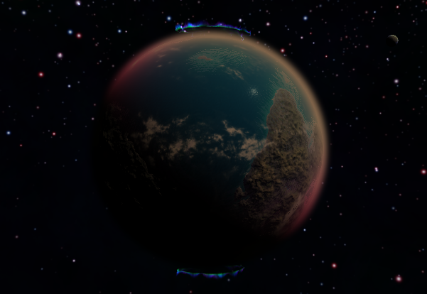
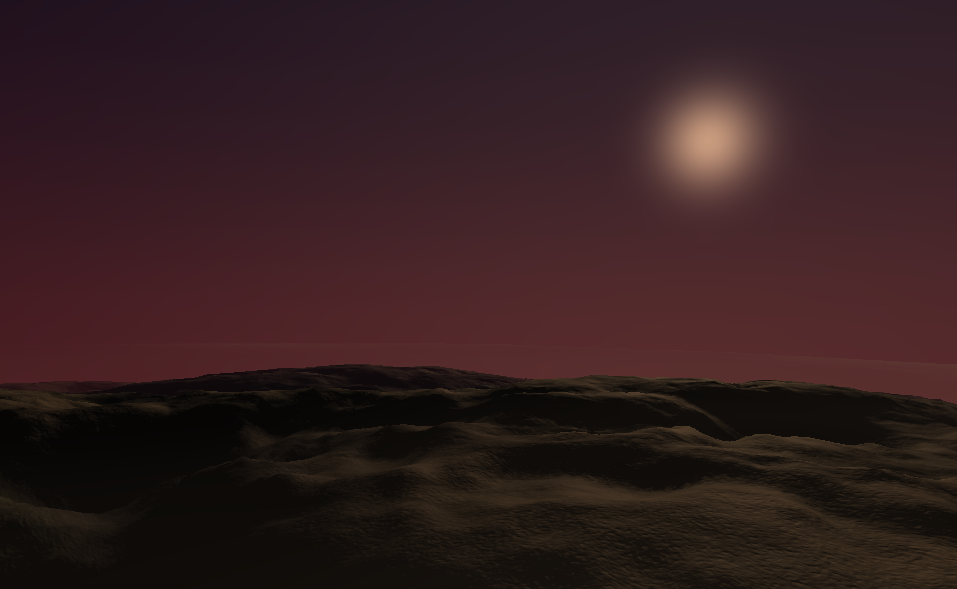

Twin Earthers NASA Space Apps - Project Exovita

TE 22008 b
Leveraging publicly available data and cutting-edge scientific knowledge, we have successfully created our own rendition of a habitable exoplanet, named TE 22008 b, and undertaken a comprehensive comparative analysis with our own beloved Earth. This ambitious endeavor serves as a remarkable stepping stone towards understanding the potential conditions necessary for extraterrestrial life and the feasibility of human habitation beyond our home planet.Objectives of our project:
1.
Design and Create a habitable exoplanet based on astrobiological concepts.2.
Develop a 500 word passage on how living in the habitable exoplanet would be like realisticallyLithospheric Composition
The lithosphere of TE 22008 b closely mirrors Earth's, primarily consisting of silicate rocks; however, it exhibits a distinct reddish hue owing to its higher iron content. This unique geological feature sets it apart and offers a stunning visual contrast to our familiar blue planet. The surface of this celestial body is characterized by rugged and towering mountain ranges, shaped by an active system of plate tectonics. These geological dynamics have contributed to the creation of dramatic, jagged landscapes, punctuating the exoplanet's terrain with awe-inspiring peaks and deep valleys. The presence of plate tectonics not only underscores the planet's geological dynamism but also raises intriguing questions about its potential impact on the planet's habitability, providing a captivating subject for further exploration and scientific inquiry.Atmospheric
Composition
Oxygen 23%
Carbon 1%
Other Gases 1%
What is TE 22008 b
TE 22008 b is an exoplanet located in one of the arms of a spiral galaxy orbiting a K-class dwarf star with an axial tilt of 24 degrees. As a result, the planet orbits much closer to its star, although still remaining in the star’s habitable zone, around 1AU away. The nature of the star makes it so that it has a reduced emission of ultraviolet rays and X-rays, is not prone to solar flares, and is less likely to tidally lock the planet. It also has a singular moon orbiting it. TE 22008 b is larger than Earth with its radius being 1.5 times longer than it, producing around 1.2G of gravitational pull. It would be harder to move and perform tasks due to the increased gravity, but it could also positively affect a person’s muscle mass, bone density, and cardiovascular performance. The bigger size also means more space for industrial development, natural resources, and agricultural activities. The increased gravity also results in a thicker atmosphere, which is composed of 75% nitrogen, 23% oxygen, 1% carbon, and 1% other gasses. As oxygen is an essential aspect of respiration, the increase of oxygen in the atmosphere makes respiration more effective and efficient. However it also has some drawbacks. Combustion is enhanced which does have its benefits, but fire and combustion are a more dangerous hazard now. Furthermore, the difference in atmospheric composition can lead to biological problems in living beings, such as accelerated aging. The planet has a thicker liquid core than the Earth composed mainly of nickel and iron, which results in a magnetic field around the planet. The crust mainly contains silicate rocks like Earth, but with a greater iron content leading it to look more reddish. The surface is mostly mountainous and jagged due to plate tectonics. Life here would be different from life on Earth. The star would be closer, and the light it emits has a good portion of it in the infrared side of the light spectrum. Without any evolutionary adaptation, we would perceive colors as dimmer and more towards hues of red. Color psychology tells us that this affects the mindset, mood, and emotions of a person. A result of this color shift could be a change in the decision-making abilities and behavior of people. Temperatures would drop and we would have colder winters and summers. Furthermore, the day/night cycle would be affected, resulting in a disruption to the circadian rhythm of a person, leading to the need to readjust. Humanity would need to adapt to the colder climate, focusing resources more on heating, insulation, and new agricultural practices. The colder climatic conditions may cause people to migrate to more habitable areas of the planet. People will need to innovate methods to overcome the challenges brought by this environment, mainly the harnessing of volcanoes for energy and heat as solar panels are not as effective due to the decrease in sunlight.


Resources:
- SEEC - What makes a planet habitable?
- NASA SVS | What Makes an Exoplanet Habitable?
- NASA - The Habitable Zone | The Search For Life – Exoplanet Exploration: Planets Beyond our Solar System
- HyperPhysics - Windows of Creation
- Quora - Ideal Axial Tilt
- Quora - Atmosphere Colors If the Earth Orbited an Orange Dwarf
- Quora - What would happen if Earth's core becomes bigger than it is now?
- Jagran Josh - What makes Earth suitable for life?
- Sky at Night Magazine - What makes a planet habitable?